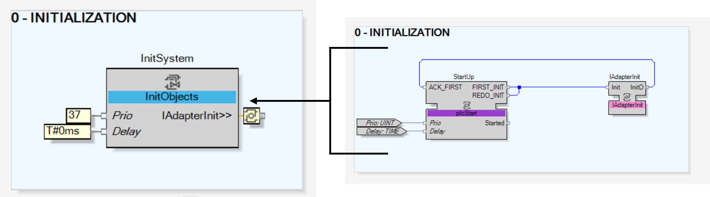

A sub-system is generally an entity that is composed of many children. Some of them are simples, e.g. a motor, some are complex ,e.g. a full packaged unit.
In that case, the sub-system uses a SubApp object type to allow each of its internal elements to be deployed across multiple resources.
Thus, as each internal element can be deployed on different resources, internal initialization of the sub-system:
Follows an autonomous event chain, where priority is defined following the specific needs of sequential INIT.
Simplifies the transfer of the initialization chain.
To do so, create a CAT encapsulating a plcStart function block and an adapter to mask the bidirectional nature of the initialization event of plcStart.

The initialization priority is set by a positive number in the input variable Prio of the function blocks InitObjects and plcStart.
The lowest the number is the highest the priority to in the initialization is. Thus, for sub-systems, it is recommended to set the input variable to a value greater than or equal to 37 since lower than this is reserved for internal system initialization.
Here are indicative values for different types of elements:
Input and output typical (e.g. DI, DO, AI, AO): Priority = 30
Typical (e.g. motors, pumps, valves): Priority >= 40
Level-1 sub-system (e.g. children of the same parent): Priority >= 45
Level-2 sub-system (when containing at least another sub-system): Priority >= 50